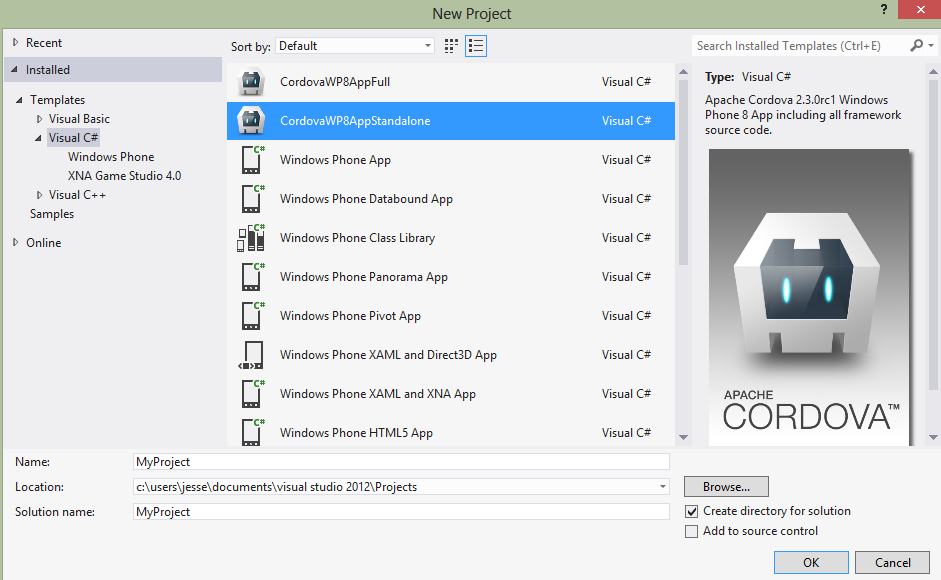
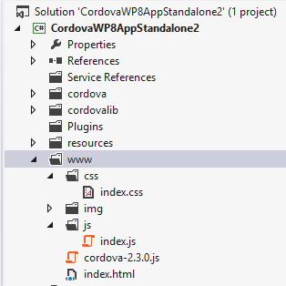

Getting Started with Windows Phone 8
This guide describes how to set up your development environment for Cordova and run a sample application. Note that Cordova used to be called PhoneGap, so some of the sites still use the old PhoneGap name.
Note: Applications built with Apache Cordova for Windows Phone 8 will only run on Windows Phone 8 devices. If you are looking to target both 7.5 AND 8 devices, then you should be using Apache Cordova for Windows Phone 7, which does not have all the new shiny features included in IE10, but implements the same APIs.
1. System Requirements
-
Operating System:
- Windows 8 or Windows 8 Pro
- The 64-bit version (x64) of Windows is required for the SDK.
- The Pro version is recommended so you can run a device emulator.
- Windows 8 or Windows 8 Pro
-
Hardware:
- 6.5 GB of free hard disk space
- 4 GB RAM
- 64-bit (x64) CPU
-
Windows Phone 8 Emulator
- The phone emulator uses Hyper-V, so this list includes those pre-reqs.
- Windows 8 Pro 64-bit edition or greater
- Requires a processor that supports virtualization and Second Level Address Translation (SLAT)
- Enable the virtualization capability (i.e., VT-x on Intel) in your BIOS settings, as usually this is disabled by default.
-
SDK + IDE ( Visual Studio )
- Visual Studio 2012 Professional, Premium, or Ultimate. Note that Visual Studio Express for Windows Phone (included in the SDK) is not recommended because you can not build the template (see below) with VS Express, as it does not have the "Export Template" functionality, which is only in VS Pro or higher.
Register and pay for a Windows Phone Dev Center account if you want to install your app on a real device and/or submit it to Market Place.
Note: Running the SDK in Virtual Machine might present some challenges. You can read this blog post that gives insight on the solutions to develop for Windows Phone on a Mac.
2. Install SDK + Cordova
- Download and install Windows Phone SDK
- Download the latest copy of [PhoneGap and extract its contents. We will be working with the subfolder: lib\windows-phone-8\
- copy the file CordovaWP8xx_x.zip to the folder : \My Documents\Visual Studio 2012\Templates\ProjectTemplates\
2.1. Building the template
Note: this step may not be required. If the lib\windows-phone directory already contains a file CordovaWP8xx_x.zip then you may skip this step.
In order to simplify the development process, Cordova comes with a Visual Studio template that allows creating a Cordova application rapidly. This template can be modified if needed and the below steps indicate how to proceed if you want to modify and re-generate the template.
- Open the file lib\windows-phone\templates\standalone\CordovaSolution.sln in Visual Studio Express for Windows Phone
- From the file menu, select 'Export Template...'
- Choose template type 'Project template'
- Give the exported template a name, ex. CordovaStarter-2.1.0 will produce CordovaStarter-2.1.0.zip
- Optionally, you may add a description, icon image, and Preview image. These are what is displayed in Visual Studio in the 'New Project' dialog.-
- Note: If you select ( 'Automatically import the template ... ') then you will not need to copy the .zip file over as outlined in step 2.
- Press 'Finish'
2.2 About the template
Apache Cordova for Windows Phone 8 has moved to only supporting the standalone template.
The 'Stand-Alone' template includes ALL the source code for Apache Cordova. This project is easier to fine-tune to use just the features you need, thereby working around the permissions issues of using the dll. In order to exclude an API (Plugin) you are not using, you can simply right-click-select the Command class file in Visual Studio and choose 'do not include in project'.
3. Setup New Project
- Open Visual Studio Express for Windows Phone and choose New Project.
- Select CordovaWP8. ( the version number will be displayed in the template description )
- Give your project a name, and select OK.

4. Review the project structure
- The 'www' folder contains your Cordova html/js/css and any other resources included in your app.
- Any content that you add here needs to be a part of the Visual Studio project, and it must be set as content.

5. Build and Deploy to Emulator
- Make sure to have Windows Phone Emulator selected in the top drop-down menu.
- Hit the green play button beside the Windows Phone Emulator drop-down menu to start debugging or press F5.

6. Build your project for the device
In order to test your application on a device, the device must be registered. Click here.aspx) to read documentation on deploying and testing on your Windows Phone 8.
- Make sure your phone is connected, and the screen is unlocked
- In Visual Studio, select 'Device' from the top drop-down menu.
- Hit the green play button beside the drop-down menu to start debugging or press F5.

Done!
Further Reading
For more details on the specific differences between IE10 and WebKit browsers, and how to support both MS has a helpful guide here